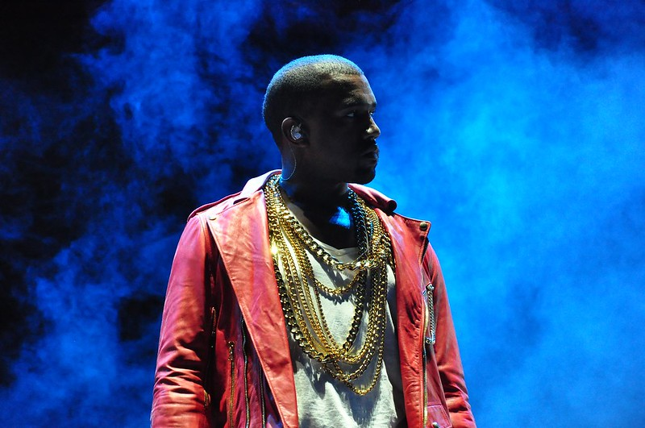

Quem é Kanye West?
Kanye West é um rapper norte-americano conhecido por sua trajetória como compositor e produtor musical. Além disso, ele também atua como diretor de arte e estilista.
Nome Completo: Kanye Omari West
Ocupação: Rapper, Compositor, Produtor Musical
Local de Nascimento: Atlanta, Georgia, EUA
Kanye West nasceu em Atlanta, na Geórgia, em 1977. Seu nome completo é Kanye Omari West, mas ele também tem seus outros apelidos, que são Ye ou Yeezy.
O rapper foi criado por sua mãe em Chicago, que trabalhava dando aulas de inglês. Eles se mudaram para essa cidade após a separação de seus pais, quando ele tinha 3 anos. Assim, seu pai Ray West, já foi um membro dos Panteras Negras e também atuava como fotojornalista do Atlanta Journal-Constitution.
Já no início de sua carreira na música, Kanye West começou a produzir para alguns artistas de renome. A produção do rapper era feita com a mentoria do produtor norte-americano No I.D.. Mas assim como muitos profissionais da música, Kanye não teve um grande sucesso logo no começo.
O sucesso de Kanye West ganhou uma força maior a partir do momento que ele começou a produzir para artistas da Roc-A-Fella Records. Além disso, ele trabalhou na produção musical “This Can’t Be Life” de Jay-Z, que recebeu diversos elogios. Os trabalhos deram continuidade, e em 2001 ele produziu músicas para o álbum “The Blueprint”, de Jay-Z. Através disso que ele alcançou um alto valor na indústria do hip-hop, embora ainda não tivesse iniciado seu sucesso como rapper solo.
